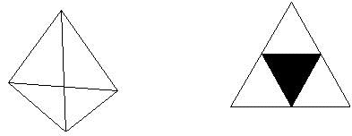

| A Koch Tetrahedron is the result of a construction process which
is started from a hollow regular tetrahedron, called the stage 0 Koch Tetrahedron. |
| A regular tetrahedron has four faces all of which are congruent equilateral triangles. |
| Connect the midpoints of the sides of each face with line segments. Each face now
contains four congruent equilateral triangles. Remove the central triangle of each face. |
|  |
Left: A regular tetrahedron. All four faces are equilateral triangles. Right:
One of the faces with the central triangle removed. |
| Now construct a tetrahedron using triangles congruent to the triangle which was
removed, but only use three such triangles to make the tetrahedron. |
| Tape this tetrahedron to a face of the stage 0 Koch Tetrahedron with
the edges of the missing face lying along the sides of the removed center triangle of the stage
0 Koch tetrahedron and the vertex of the tetrahedron lying outside the stage 0 Koch tetrahedron. |
| Do this for each face of the stage 0 Koch tetrahedron. |
|
Left: One of the new tetrahedra glued to one face of the stage 0 Koch tetrahedron. Right:
The stage 1 Koch tetrahedron, inscribed in a cube. |
| The resulting figure is a stage 1 Koch Tetrahedron. |
| Each face of the stage 0 Koch
tetrahedron has been replaced by a shape made of six congruent equilateral triangles. |
| Three of these lie in the same plane as the original face from stage 0 and three point
outward in the shape of a tetrahedron. |
| Now imagine continuing this process forever. |
| That is, replace each triangle of a stage 1 face by a shape made from six triangles as described above. |
| As this process continues, the lengths of the sides of the triangles being added are one-half the size
of those of the previous stage. |
| Additions of new triangles at successive stages produce smaller and smaller changes in the surface. |
| The Koch Tetrahedron is the limiting shape to which this process converges if
continued without end. |